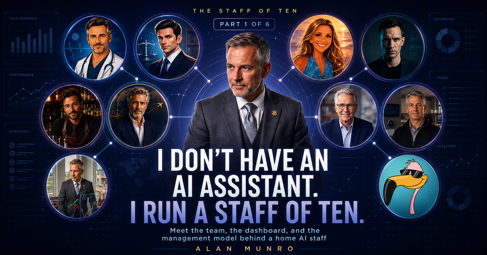

Meet the team, the dashboard that keeps them honest, and why a video-operations guy built any of this in the first place.

By day I help manage and lead video operations for a large media company - alongside a lot of talented folks who make it work. I'm not a software engineer. AI is not in my job description.
That's exactly why I built what I'm about to show you.
Everybody I know "uses AI" the same way: one chat window, ask it something, close the tab. Useful, but it's a vending machine, it's google, not a coworker. It has no beat, no memory of yesterday, and no way for you to check whether it's actually doing its job.
What I have instead is a staff. Ten specialized agents, each with a name, a job, and standing instructions. One runs my short-term-rental business. One paper-trades a simulated brokerage account under hard rules. One is my retirement CFO. One is house counsel. They don't wait for me to open a chat window - they run on their own schedules, dozens of scheduled jobs between them, and they report to a single dashboard I can pull up on my phone.
Before the tour, here's the point of the whole series, up front: nobody was going to hand me an AI education. If you're waiting for your company to give you an AI project, you might wait a long time. You don't need permission to learn this technology. You need a project you actually care about. Everything below was built at home, nights and weekends, in partnership with AI. The skills came along for free.
And here's what each desk was doing on the morning I wrote this:
| Agent | Desk | This morning |
|---|---|---|
| Frosty | Rental business | Upcoming stays, next check-in soon |
| Fable | Trading (paper) | Flat week, no open positions, inside every limit |
| Warren | Retirement | ⚠️ Waiting on me — needs my numbers before he'll model anything |
| Ellis | Legal | No open matters |
| Stone | Health | ⚠️ Holding a health note for my next appointment |
| Miles | Chief of staff | Daily brief out at 4 a.m., calendar current |
| Foster | Home ops | Home inventory · contractor records · 3 tasks due |
| Atlas | Travel | Late-July trip booked, a few loose ends |
| Sullivan | The bar | Manages my bar inventory, a lot of bottles, 80 recipes, fourteen bottles running low |
| Sparkles | My wife's chief of staff | Her login, her rules — that story closes the series |
Notice two of those are flagged. That's not embarrassing, that's the product working. Warren is stuck because I haven't given him my numbers. Stone is holding a note for my next doctor visit. A dashboard where everything is always green might just be lying to you.
All the agents report everything to one dashboard, I call it
Mission Control - one tile per agent, on my phone. Here's a
mock-up. The numbers are invented, because the real board is
private.
The agents can't write on each other's tiles, and they're forbidden from reading each other's files. Each one reports its own status; the board just displays. It's a newsroom with a wall between reporters, not a group chat.
Quick look under the hood, because "I have ten AI agents" might sound like magic, it's not. The chassis is OpenClaw, a self-hosted agent framework running locally in my home lab. Each agent is basically a folder on that machine: a written job description (who you are, what you own, what you must never do), its own memory files, and a set of scheduled jobs. The 4 a.m. business brief, the weekly check-ins, the monthly license review — under the hood, those are just cron jobs that wake the right agent with the right assignment.
The brains are rented by the minute. When an agent wakes up, OpenClaw hands its instructions and the task to a large language model — and which model is a routing decision. Most of the fleet goes through OpenRouter.ai, a marketplace that puts dozens of models behind one API, where very capable budget models like DeepSeek and MiniMax usually win the job. My bartender doesn't need a frontier model to match cocktails to bottles; he needs a smart-enough one for pennies. The two desks that handle my most sensitive financial and legal categories skip the marketplace entirely and talk directly to Anthropic and OpenAI. Why they get different treatment is part 5.
Notice what's not in that picture: anything exotic. A framework, a router, a couple of API keys, and a lot of management. Which brings me to the part nobody warns you about.
Here's what surprised me most, and it's the thread that runs through this whole series: none of these agents were set up once and left alone. Anyone who tells you they stood up a fleet of autonomous agents in an afternoon is selling something.
Running this staff is an ongoing back-and-forth, much closer to managing people than installing software. I describe what I want a desk to handle. We draft its standing instructions together. I watch how it behaves for a few days, and then we tighten. An agent that was too eager gets a firmer rule. One that kept asking the same question gets the answer written into its instruction set, which openclaw calls it's soul.md. Ones that guess, or hallucinate when it should have escalated gets taught to escalate.
And that back-and-forth is the skill. When people ask me "what tool did you use," it's the wrong question. The work isn't the tool — it's writing a good job description, judging output, drawing the line between "just handle it" and "bring it to me," and redrawing that line as trust builds. That's management. It's also, not coincidentally, exactly the skill set every company says it wants in an "AI-capable" leader. I built mine at my kitchen table.
The agents are built to keep me in the loop, not to run off and act on everything. That's why Warren's tile says "waiting on me" instead of inventing a retirement plan from thin data, and why my rental agent approves a clean booking overnight but kicks the weird ones up to me by morning. The goal was never a machine that needs no human. The goal was a staff that knows the difference.
One last thing before the tour starts. Not a single one of
these agents took a job from anyone — most of them do work that
simply never got done before, because it wasn't practical for a
human to do it, or I just didn't have the time. That's the
version of AI I want people excited about: not the one that
replaces you, the one that hands you capabilities you didn't
have last year. I didn't set out to build an army of agents. I
set out to stop keeping everything I do to manage my household
in my head. I needed some help remembering everything. It
turned into a staff of ten — nine of mine, and one married in.
Which task in your life deserves its own desk?